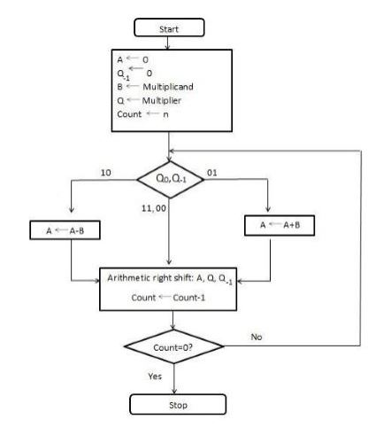

The flow chart for Booth's Algorithm for 2's complement multiplication:

Numerical :
(5)10= (0101)2
M=(-5)10= (1011)2(2's complement)
(2)10= (0010)2
Q=(-2)10= (1110)2(2's complement)
initially Q-1=0
(Note : register size=4 hence perform 4 cycles)
| cycles | AC | Q Q3,Q2,Q1,Q0 |
Q-1 | Operation |
|---|---|---|---|---|
| - | 0000 | 1110 | 0 | (Q0 and Q-1)=(0,0) so Right shift |
| 1 | 0000 | 0111 | 0 | (Q0 and Q-1)=(1,0) hence perform Ac=AC-M and then right shift |
| 2 | 0101 0010 |
0111 1011 |
0 1 |
(Q0 and Q-1)=(1,1) so Right shift |
| 3 | 0001 | 0101 | 1 | (Q0 and Q-1)=(1,1) so Right shift |
| 4 | 0000 | 1010 | 1 | - |